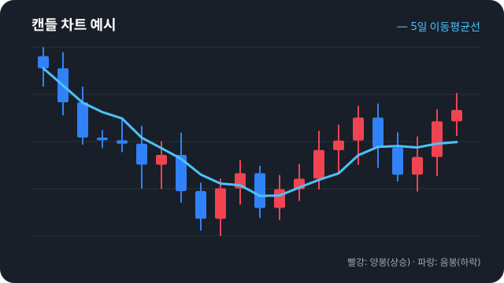

주식이란?
주식은 회사의 소유권을 잘게 나눈 증서예요. 주식을 산다는 건 그 회사의 작은 주인이 된다는 뜻이고, 회사가 성장하면 주가 상승(시세차익)이나 배당으로 이익을 나눠 받을 수 있습니다. 반대로 회사가 어려워지면 주가가 떨어져 원금 손실이 생길 수도 있어요.
우리나라 정규 주식시장은 평일 부터 까지 열립니다.
주식 투자 2년 차, 데이터사이언스 전공 대학생의 공부 기록
주식은 회사의 소유권을 잘게 나눈 증서예요. 주식을 산다는 건 그 회사의 작은 주인이 된다는 뜻이고, 회사가 성장하면 주가 상승(시세차익)이나 배당으로 이익을 나눠 받을 수 있습니다. 반대로 회사가 어려워지면 주가가 떨어져 원금 손실이 생길 수도 있어요.
우리나라 정규 주식시장은 평일 부터 까지 열립니다.
| 분류 | 용어 | 뜻 |
|---|---|---|
| 시장 | 코스피(KOSPI) | 유가증권시장. 규모가 큰 대표 기업들이 주로 상장된 시장 |
| 코스닥(KOSDAQ) | 기술·성장 중심 기업이 많이 상장된 시장 | |
| 주문 | 지정가 주문 | 내가 정한 가격에만 사고팔겠다는 주문 |
| 시장가 주문 | 가격을 정하지 않고 지금 거래 가능한 가격으로 바로 체결하는 주문 | |
| 지표 | PER (주가수익비율) | 주가 ÷ 주당순이익(EPS). 이익에 비해 주가가 몇 배인지 |
| PBR (주가순자산비율) | 주가 ÷ 주당순자산(BPS). 회사 순자산에 비해 주가가 몇 배인지 | |
| ROE (자기자본이익률) | 순이익 ÷ 자기자본 × 100. 내 돈(자본)으로 얼마나 효율적으로 벌었는지 | |
| 배당 | 회사가 번 이익의 일부를 주주에게 나눠 주는 것 | |
| ※ PER·PBR은 같은 업종끼리 비교해야 의미가 있어요. 숫자 하나만 보고 판단하지 않기! | ||

최근에 인상 깊게 본 차트 공부 영상이에요. 캔들 차트를 읽는 데 큰 도움이 되어서 여러분과도 공유하고 싶어요!
영상이 재생되지 않으면 YouTube에서 직접 보기
네. 1주 단위로 살 수 있어서 소액으로도 시작할 수 있어요. 저도 아르바이트비 일부로 시작했어요.
종목 추천은 하지 않아요! 대신 내가 이해할 수 있는 회사인지, 공시와 재무제표를 확인했는지 스스로 점검해 보는 걸 추천해요.
첫 투자로 바이오 개별주를 샀던 경험이요. 임상 결과에 따라 주가가 크게 출렁이는 걸 보고, 예측하기 어려운 곳에 큰돈을 걸지 않는 원칙을 세웠어요.
내 주식에도 빨간불이 들어오길 바라며 매일 아침 듣는 노래